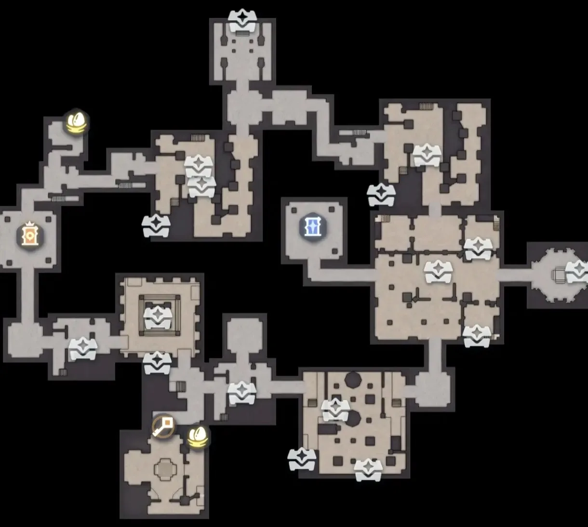
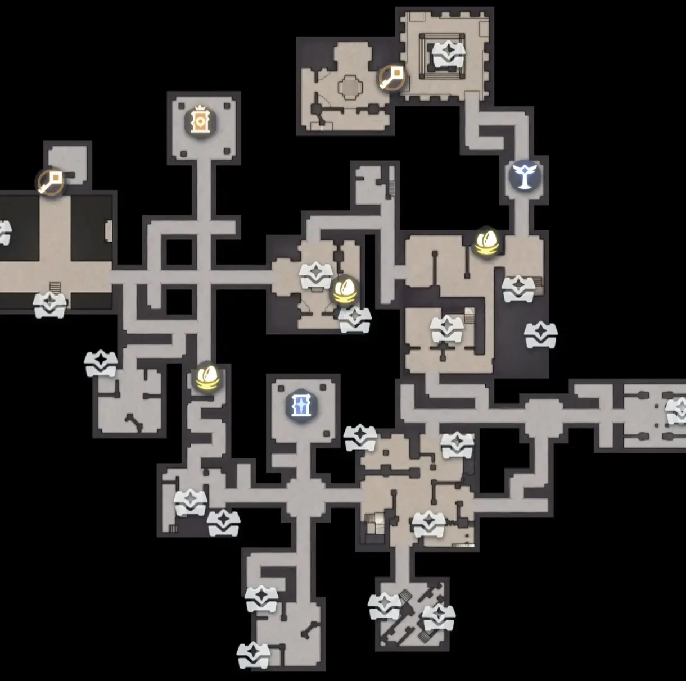
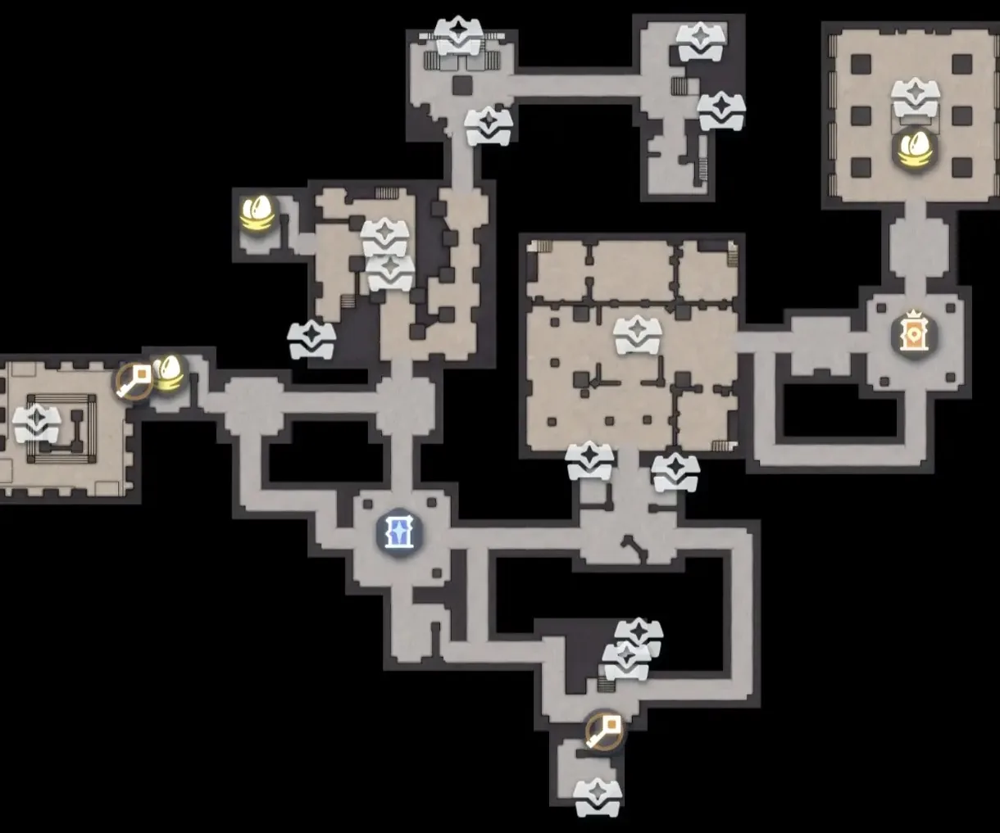
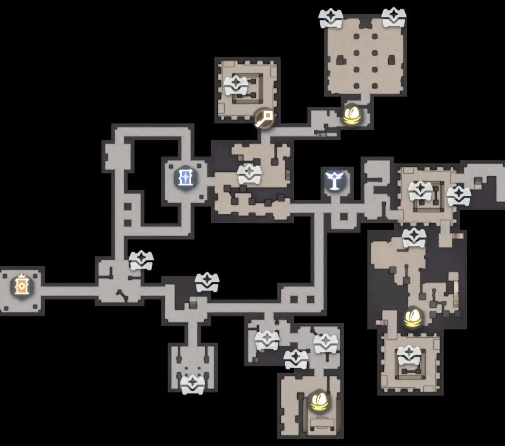
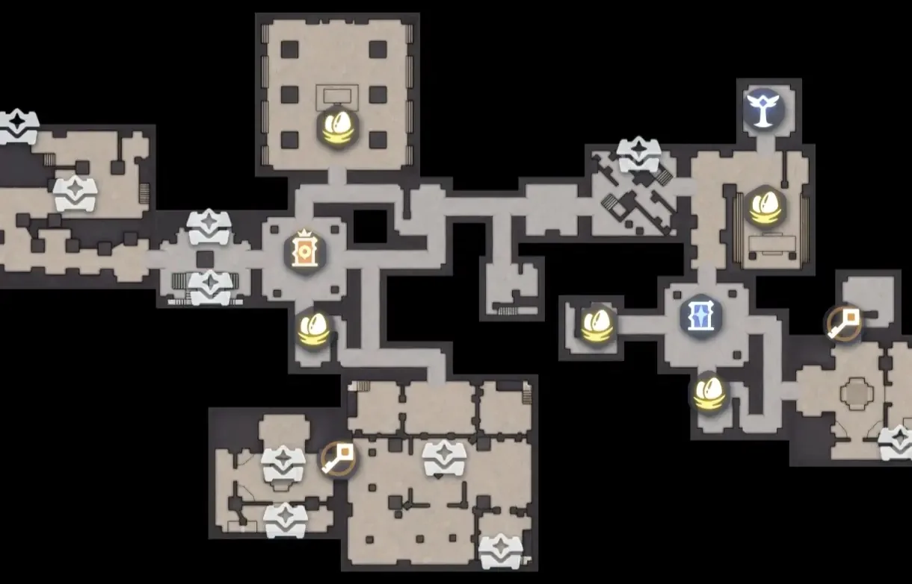
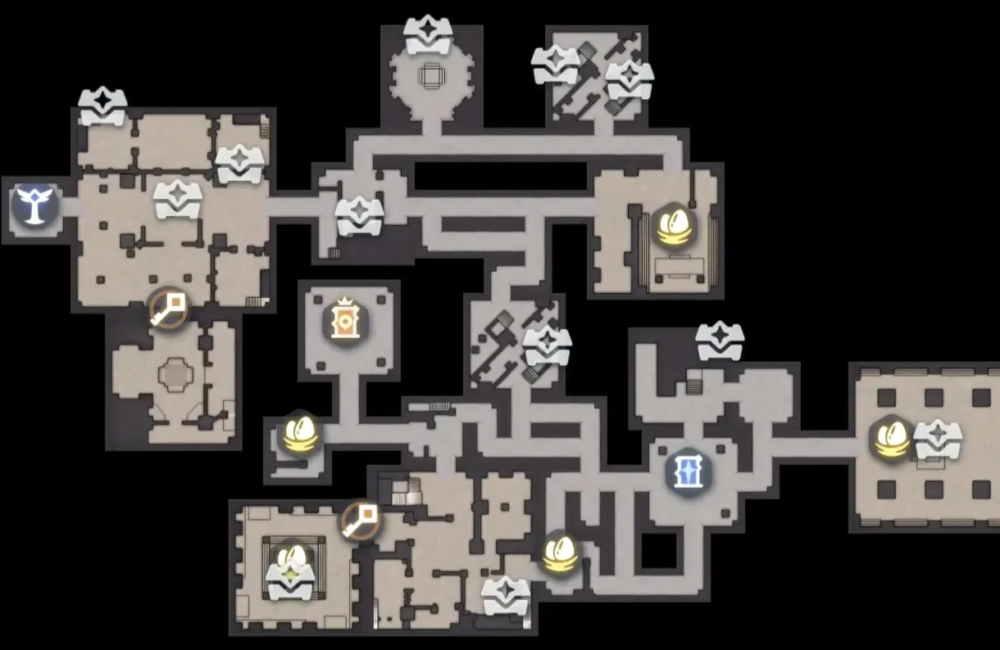
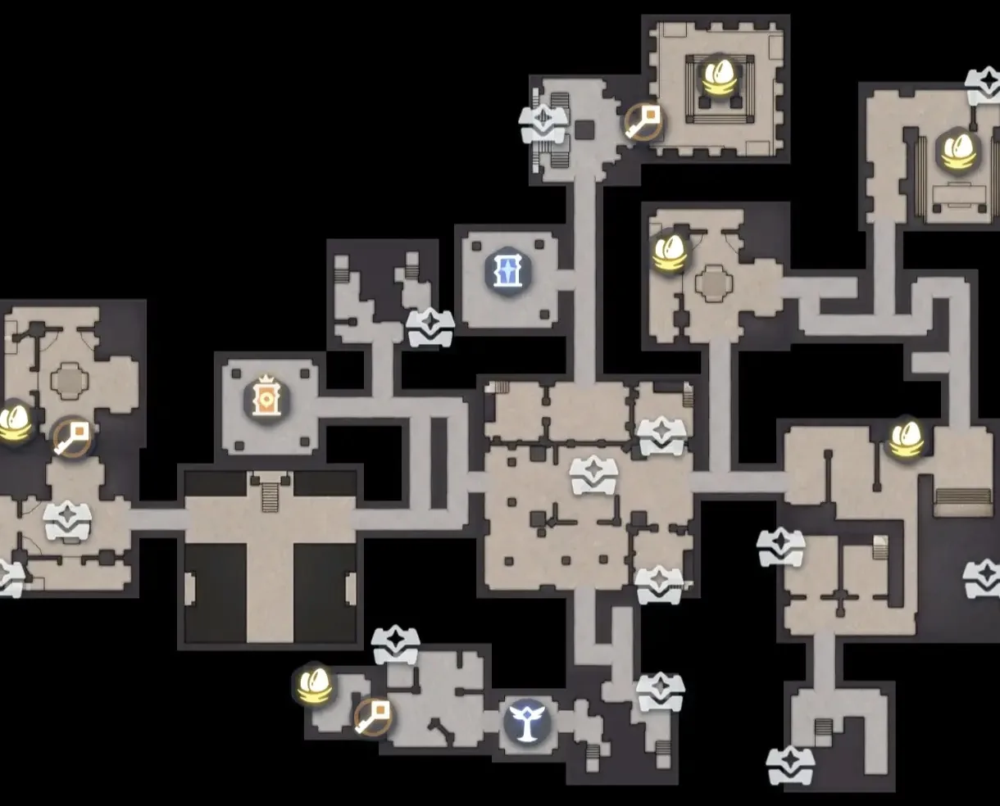
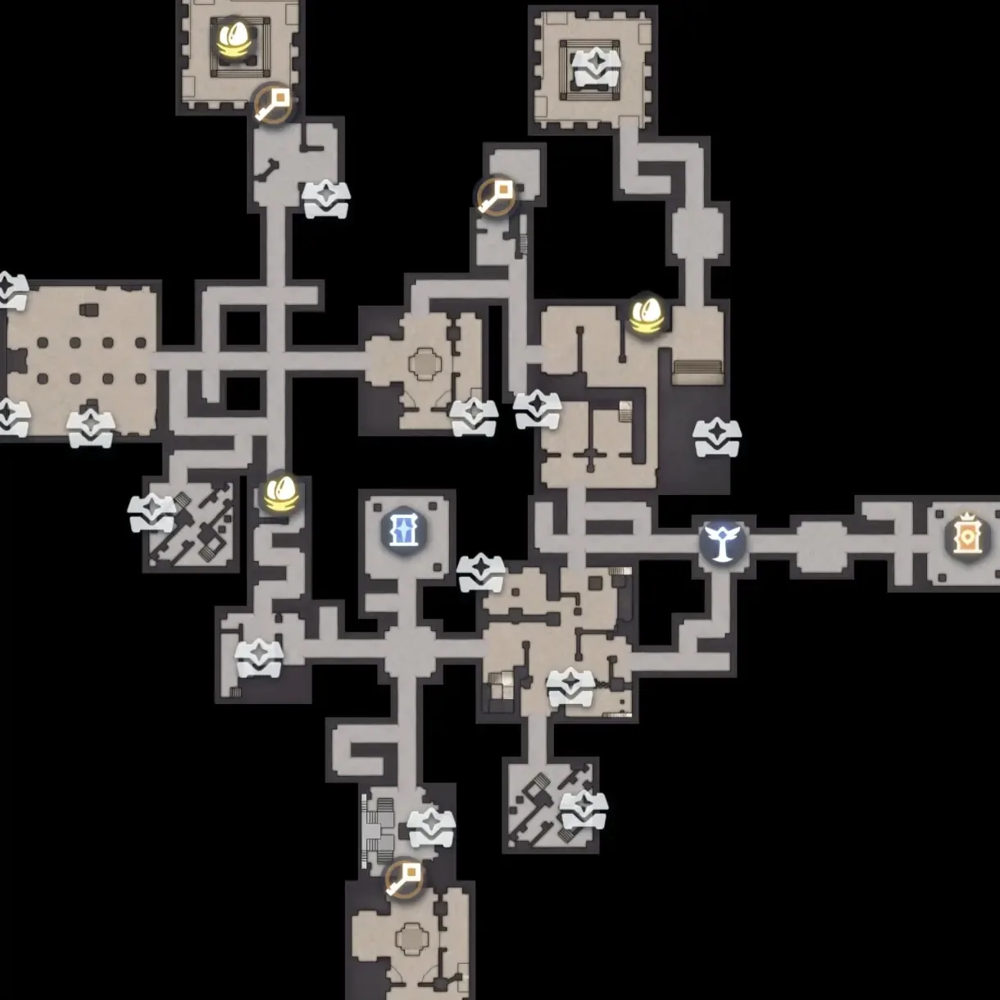
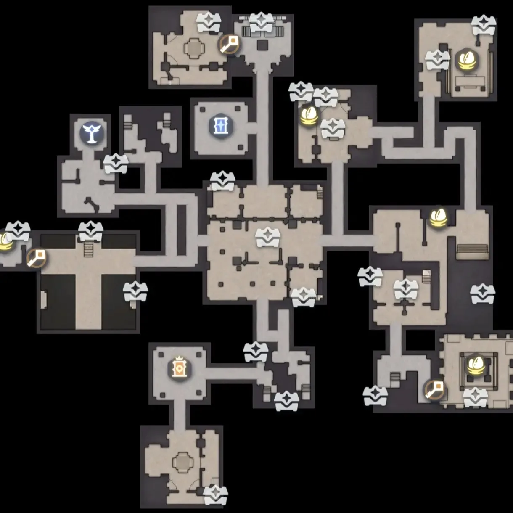
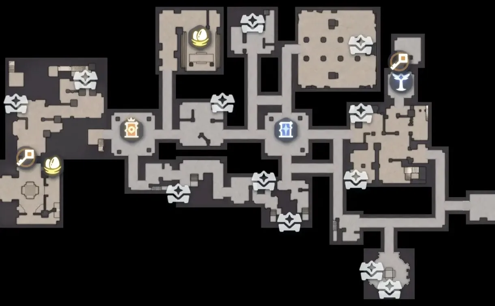

Home首页 / Guides攻略 / Operation: Egg Heist — Nightmare Difficulty, All Ten Maps, and an Egg Every Four Minutes《伊莫》抢蛋大作战：噩梦难度十张图，单人四分钟稳拿一枚蛋
Checked核对于 October 21, 20262026 年 10 月 21 日
Operation: Egg Heist — Nightmare Difficulty, All Ten Maps, and an Egg Every Four Minutes《伊莫》抢蛋大作战：噩梦难度十张图，单人四分钟稳拿一枚蛋
The solo speedrun through Nightmare: what to buy before the doors open, who to bring, and the ten maps read off two fixed landmarks — the blue door and the crowned plaque.噩梦难度怎么单人速通：进场前买什么、带谁，以及靠蓝色门和橙色王冠牌这两处固定地标，认出地宫十张图里的哪一张。
Nightmare is not a difficulty you fight; it is one you run. The whole method is a single sentence: go in alone, take the eggs and the high-value loot, and run from anything that moves. You kill nothing and you do not open crates you do not have to, and in about four minutes you walk out with an egg — the most consistent return the mode offers. Below it is split into three parts: before the doors open, once you are inside, and the two mistakes that waste a run. After that come all ten Nightmare maps, because for your first three runs the map is lit and from the fourth it fogs over and these are what you navigate by.噩梦难度不适合打，适合跑。这套打法的核心只有一句：单人进、只拿蛋和高价值物资、见怪就跑。全程不打怪、也不贪宝箱，四分钟左右就能稳拿一枚蛋撤离，收益最稳。下面按进场前、进场后、避坑三段拆开讲，最后附上噩梦地宫的十张全图 —— 新手前三局能直接看地图，三局之后地图变迷雾，就要靠这十张图对照认路。
Before the doors open: the talent points go into weight进场前：天赋点负重，背包按格数买
Talents go into carry weight first. Fill the weight talent at level 3 and the stamina talent at level 3 before anything else: without those two, the moment your bag fills you start dragging — over the weight cap your movement speed drops — and the stretch on the way out is exactly where a run goes wrong.天赋优先点负重。3 级负重和 3 级体力先点满，这两条不点，东西一多走路就开始拖，超重降移速，撤离路上最容易出事的正是这一段。
Pick the backpack by slot count: the 12-slot blue one is enough, and the 16-slot purple one is for when you want to carry a little more. Bring 2 to 4 healing sprays — enough to get you from taking a hit to being back on the boat. Bag and sprays together should come to 40,000 to 60,000.背包按格数选：12 格蓝包够用，想多揣一点就换 16 格紫包。补给带 2 到 4 个治疗喷雾，够你从挨打到撤回船上就行。连包带药，总花费控制在 4 到 6 万。
Who to bring: a main that moves, support that heals配队：主战要高机动，支援带回血
The main slot has two requirements and nothing else: it runs fast and it jumps high. Blazen (Lightning · Break) has the high jump and the glide; Fentuft (Lightning · DPS) brings the speed buff. Those two are the first pick for a solo run.主战只看两件事 —— 跑得快、跳得高。雷光貂（Blazen，电 · 击破）有高跳滑翔，天使耶（Fentuft，电 · 输出）带加速，这两只是单人速通的首选。
The support slots carry two Glacy (Water · Ice · Heal) for the healing, which is the most forgiving arrangement there is. The reasoning is plain: you are not here to fight, so a health bar only has to last until the next stretch of road — being able to heal is another life.支援位带两条莹冰龙（Glacy，水 · 冰 · 治疗）回血，容错率最高。这套配置的意思很直白：你本来就不打算打，血条只用来撑到下一段路，能补血就等于多一条命。
Inside: straight to the underground palace, then the merchant at the exit局内：进图直奔地宫，先在出口买商人
Do not wander the open map — go straight for the underground palace. At the exit, find the mystery merchant and buy the purple Attack Amplifier and the Protective Unit: those two are the floor under your offence and defence for the rest of the run, and the money is best spent there.进图别在外面转，直接往地宫走。到出口处找神秘商人，把紫色攻击增幅器和防护单元买上 —— 这两件是这一局攻防的基本盘，钱花在这儿最值。
For the chip that goes in the backpack, take the carry-weight one. What you are collecting is eggs and high-value loot; if it does not fit, the run was for nothing, and a weight chip is worth more than any chip pointed at damage.背包芯片选负重芯片。要拿的是蛋和高价值物资，装不下等于白跑，负重芯片比任何攻击向的芯片都实在。
Getting out: find the purple door, dig an egg and leave撤离：找到紫门，挖出蛋就走
There is one route: into the underground palace, find the purple door, dig out an egg, and leave through the purple door. You fight nothing on the way and you open no ordinary crates — the few seconds a crate costs is the most exposed you will be all run.路线只有一条：进图直奔地宫，找紫门，挖出蛋，从紫门撤。中间不打怪，普通宝箱也不开 —— 开箱的那几秒钟，正是这一局最容易挨打的时候。
There is an order to the egg, though. Do not Twine it the moment it comes out: put what you are carrying down by the egg boat first, go back into the palace and loot, and come back to Twine and leave. The reason is practical — once you are twined you move at the egg's speed, and when you are heavy neither of you moves quickly.挖蛋有个顺序问题。蛋挖出来之后先别联结：先把身上的物资放到蛋船旁边，再回头进地宫搜刮，最后回来联结、走人。原因很实在，联结之后你走的是蛋的速度，负重高的时候人走不动，蛋也走不快。
The two ways a run is wasted避坑：两件事最容易让人把一局白跑
The first is the dangerous mobs. Meet 黑曜屎壳郎 or Witchin (Dark · Grass · Regen) and you jump and glide away — do not try to deal with them. Witchin winds you in and it breaks the Twine: Twine broken, you are standing in a pile of mobs carrying everything you own, and that is the run.第一件是高危怪。碰到黑曜屎壳郎、巫帽草（Witchin，暗 · 草 · 回能），直接高跳滑翔拉开，不要试图处理。巫帽草会把人卷进去，还会打断联结 —— 联结一断，你带着一身物资站在怪堆里，基本就是暴毙。
The second is greed. The moment you have the egg and the high-value loot, leave; do not lose the run to a few more crates. What this method earns is never the ceiling of one run — it is four minutes a time, every time.第二件是贪。拿到蛋和高价值物资之后立刻撤离，不要为了多开几个宝箱耽误时间。这套打法赚的从来不是单局上限，而是「四分钟一次、次次都成」的稳定。
The ten Nightmare maps: read the map before the eggs十张噩梦图：先认图，再认蛋点
These ten are the Nightmare palace's floor plans, complete. What the icons mean does not change from map to map: the gold egg shape is an egg spawn, the white chest is a crate, the keyring marks a door that wants a key, and the blue door is the palace's portal. Every map also carries one orange plaque with a crown on it, always in the same place — what sounds like advice to compare two doors is really about these two landmarks on each map.这十张是噩梦地宫的完整平面图。图上标的几类东西固定不变：金色的蛋形图标是蛋点，白色宝箱是箱子，钥匙圈那一处是要拿钥匙才能开的门，蓝色的那扇门是地宫里的传送门。另外每张图上都有一块橙色带王冠的牌子，位置固定 —— 稿里说的「对照正门副门位置」，对的就是每张图上这两处固定的地标。
One thing first: those egg spawns and gold crates are fixed positions, not fixed contents — they are not up every run. So the map is not a checklist that always pays; it is 'work out which map you are on, then go and touch those spots'. Every map has at least one egg spawn, and a generous map has five or six.要先说清一件事：这些蛋点和金箱子是固定的刷新位置，但不是每局都出。所以图的用法不是「照着找一定有」，而是「先认出自己在哪张图，再去那几个点碰一下」。每张图至少有一处蛋点，运气好的图一共有五六处。
Identifying the map is the whole skill. For your first three runs the map is fully lit; from the fourth it fogs over and only the ground you have walked stays visible. That is when the two landmarks earn their place — across all ten maps, the blue door and the crowned plaque never sit in the same relative position twice. Run a stretch in two opposite directions, get a rough bearing on both, then read the table: one or two glances and you know which map you are on.关键在认图。新手前三局能直接看到完整地图，三局之后地图进入迷雾，只剩自己踩过的区域。这时候的办法是看那两处地标：十张图里，蓝色门和橙色王冠牌的相对位置没有一张是重复的。先往两个相反方向各跑一段，把两处地标的大致方位摸出来，再翻对照表，一两眼就能定下来是哪张。
| Map图 | Egg spawns蛋点 | Portal传送门大致方位 | Where they are蛋点分布 |
|---|---|---|---|
| 1 | 22 处 | middle中部 | upper left, lower left — all on the left half左上、左下 —— 全在左半边 |
| 2 | 33 处 | lower middle中部偏下 | left middle, centre, right middle — one line across the waist左中、正中、右中 —— 横着排一条线 |
| 3 | 33 处 | bottom centre下部中央 | upper left, upper right, left middle — all in the top half左上、右上、左中 —— 压在上半张 |
| 4 | 33 处 | centre正中 | upper right, lower middle, lower right — right of centre右上、下中、下右 —— 偏右 |
| 5 | 55 处 | middle right右中 | top middle, middle left, middle right twice, lower right上中、中左、中右两处、下右 |
| 6 | 44 处 | lower right右下 | upper right, lower left, lower middle, lower right右上、左下、下中、下右 |
| 7 | 66 处 | upper middle上中 | three in the upper right, then middle left, middle right, lower left — the most scattered of the ten右上三处、中左、中右、左下 —— 最散 |
| 8 | 33 处 | centre正中 | upper left, upper right, middle left左上、右上、中左 |
| 9 | 55 处 | upper middle上中 | upper middle, upper right, middle right, lower right, middle left上中、右上、中右、下右、中左 |
| 10 | 22 处 | centre正中 | upper middle, middle left上中、中左 |










Seven rules for this method这套打法记住七条
- Go in solo; do not squad up.单人进，不组队。
- Fill the weight talent at level 3 and stamina at level 3 first.天赋先点满 3 级负重和 3 级体力。
- A 12-slot blue backpack or a 16-slot purple one, 2 to 4 healing sprays, 40,000 to 60,000 all in.背包 12 格蓝包或 16 格紫包，治疗喷雾 2 到 4 个，总花费 4 到 6 万。
- Blazen or Fentuft in the main slot, two Glacy on support for the healing.主战选雷光貂或天使耶，支援带两条莹冰龙回血。
- Straight to the underground palace, and buy the purple Attack Amplifier and the Protective Unit from the merchant at the exit first.进图直奔地宫，先在出口找神秘商人买紫色攻击增幅器和防护单元。
- Take the carry-weight chip.芯片选负重芯片。
- Take only eggs and high-value loot, run from every mob, and leave through the purple door the moment you have both.只拿蛋和高价值物资，见怪就跑，拿完立刻从紫门撤。
The order matters because each step clears the way for the next: the talents and the bag decide how much you can carry, the party decides whether you get away, the merchant and the chip set the ceiling on the run — and the last one, not being greedy, decides whether any of the preparation was worth doing. Nightmare money is not fought for; it is run for.排成这个顺序，是因为每一步都在给下一步让路：天赋和背包决定你能装多少，配队决定你能不能跑掉，商人和芯片决定你这一局的上限，而最后那一条 —— 不贪 —— 决定你前面的准备是不是白做。噩梦难度的钱不是打出来的，是跑出来的。
More guides相关攻略
- Operation: Egg Heist — The South Map, and 300,000 Out of a Solo Chaos Run《伊莫》抢蛋大作战：朝南这张图，单三混沌也能带满三十万 — One of the ten Egg Heist maps, walked end to end: the route in through the front door, which crates are worth opening, how to take Stellarys down through a wall, and how to carry 300,000 out while heavily loaded.十张抢蛋大作战地图里朝南的那张，从进门走到撤离：路线怎么认、哪些箱子值得开、星魔师怎么隔墙打，以及重度负重时怎么把三十万带出去。
- Aniimo Tier List: The 19 Creatures to Build First《伊莫》强度巅峰榜：几百小时之后，新手先练这 19 只 — A personal tier list of 19 Aniimo, grouped by the job each one does — damage, break, healing and support, energy regen — with every element and role checked against the official wiki and the ranking left as my own.一份个人向的强度榜单，按输出、击破、治疗辅助、回能分成四组。每只都逐一对过官方维基的属性与定位，哪一段是能查的、哪一段是我自己的判断，文中分开写。